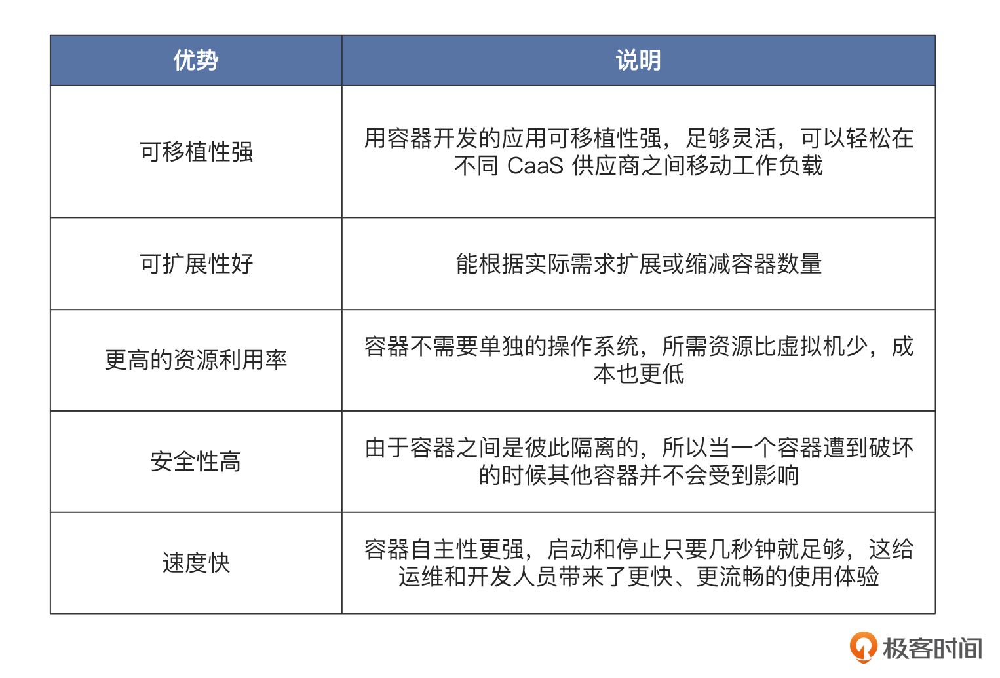
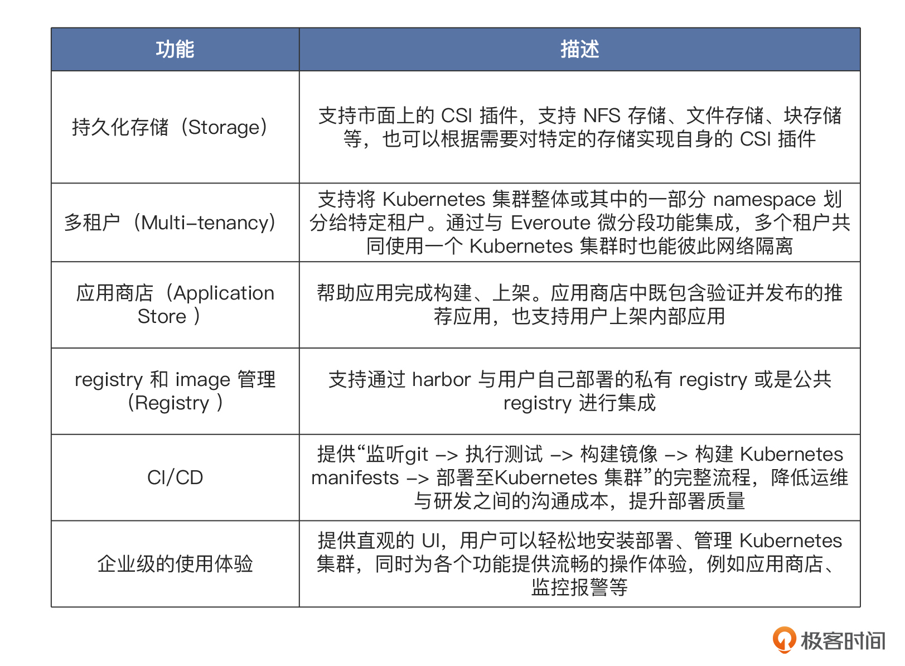

- 00 开篇词 练好基本功，优秀工程师成长第一步.md
- 01 CISC & RISC：从何而来，何至于此.md
- 02 RISC特性与发展：RISC-V凭什么成为“半导体行业的Linux”？.md
- 03 硬件语言筑基（一）：从硬件语言开启手写CPU之旅.md
- 04 硬件语言筑基（二）_ 代码是怎么生成具体电路的？.md
- 05 指令架构：RISC-V在CPU设计上到底有哪些优势？.md
- 06 手写CPU（一）：迷你CPU架构设计与取指令实现.md
- 07 手写CPU（二）：如何实现指令译码模块？.md
- 08 手写CPU（三）：如何实现指令执行模块？.md
- 09 手写CPU（四）：如何实现CPU流水线的访存阶段？.md
- 10 手写CPU（五）：CPU流水线的写回模块如何实现？.md
- 11 手写CPU（六）：如何让我们的CPU跑起来？.md
- 12 QEMU：支持RISC-V的QEMU如何构建？.md
- 13 小试牛刀：跑通RISC-V平台的Hello World程序.md
- 14 走进C语言：高级语言怎样抽象执行逻辑？.md
- 15 C与汇编：揭秘C语言编译器的“搬砖”日常.md
- 16 RISC-V指令精讲（一）：算术指令实现与调试.md
- 17 RISC-V指令精讲（二）：算术指令实现与调试.md
- 18 RISC-V指令精讲（三）：跳转指令实现与调试.md
- 19 RISC-V指令精讲（四）：跳转指令实现与调试.md
- 20 RISC-V指令精讲（五）：原子指令实现与调试.md
- 21 RISC-V指令精讲（六）：加载指令实现与调试.md
- 22 RISC-V指令精讲（七）：访存指令实现与调试.md
- 23 内存地址空间：程序中地址的三种产生方式.md
- 24 虚实结合：虚拟内存和物理内存.md
- 25 堆&栈：堆与栈的区别和应用.md
- 26 延迟分配：提高内存利用率的三种机制.md
- 27 应用内存管理：Linux的应用与内存管理.md
- 28 进程调度：应用为什么能并行执行？.md
- 29 应用间通信（一）：详解Linux进程IPC.md
- 30 应用间通信（二）：详解Linux进程IPC.md
- 31 外设通信：IO Cache与IO调度.md
- 32 IO管理：Linux如何管理多个外设？.md
- 33 lotop与lostat命令：聊聊命令背后的故事与工作原理.md
- 34 文件仓库：初识文件与文件系统.md
- 35 Linux文件系统（一）：Linux如何存放文件？.md
- 36 Linux文件系统（二）：Linux如何存放文件？.md
- 37 浏览器原理（一）：浏览器为什么要用多进程模型？.md
- 38 浏览器原理（二）：浏览器进程通信与网络渲染详解.md
- 39 源码解读：V8 执行 JS 代码的全过程.md
- 40 内功心法（一）：内核和后端通用的设计思想有哪些？.md
- 41 内功心法（二）：内核和后端通用的设计思想有哪些？.md
- 42 性能调优：性能调优工具eBPF和调优方法.md
- 先睹为快：迷你CPU项目效果演示.md
- 加餐01 云计算基础：自己动手搭建一款IAAS虚拟化平台.md
- 加餐02 学习攻略（一）：大数据&云计算，究竟怎么学？.md
- 加餐03 学习攻略（二）：大数据&云计算，究竟怎么学？.md
- 加餐04 谈谈容器云与和CaaS平台.md
- 加餐05 分布式微服务与智能SaaS.md
- 国庆策划01 知识挑战赛：检验一下学习成果吧！.md
- 国庆策划02 来自课代表的学习锦囊.md
- 国庆策划03 揭秘代码优化操作和栈保护机制.md
- 温故知新 思考题参考答案（一）.md
- 用户故事 我是怎样学习Verilog的？.md
- 结束语 心若有所向往，何惧道阻且长.md
加餐04 谈谈容器云与和CaaS平台
你好，我是LMOS。
在前面几节课程中，我们学习了解了IAAS、PAAS以及大数据相关的实现基础，这节课我们学习另外一个云计算相关的概念，就是CaaS。
CaaS也是我持续关注的一个主题，刚好和你分享分享。作为加餐，我们可以轻松一点，把重点放在了解它大概是什么，又能给我们提供什么样的支持，最后，我还会分享几个优秀的开源项目。
容器即服务——CaaS
CaaS其实是个简称，全称是Containers-as-a-Service，中文是容器即服务。CaaS是一款云服务，可以帮助使用者基于容器的抽象来管理和部署应用，以此实现关键IT功能的自动化。
想理解一个新概念，我们不妨和熟悉的概念来关联、比较一下。CaaS调度的基本单元是容器。说起容器我们应该都不陌生，它是云原生资源和微服务资源的常见部署形式。
那容器都有哪些优势呢？我画了一张表格来梳理。- 
如果你想更深入地了解容器，还可以看看第一季[第四十四节课]的内容。
IT运维团队可以在CaaS上对容器云集群进行管理和编排。容器提供了一致的环境，方便研发人员快速开发和交付可以在任何地方运行的云原生应用，这样也就实现了对资源的自动化运维和管理。研发团队则可以按照自己的需求，申请或自助使用资源。
CaaS通常被认为是IaaS的一种以容器为载体的子集，CaaS介于IaaS和PaaS之间，它起到了屏蔽底层系统IaaS，支撑并丰富上层应用平台PaaS的作用。
这里又一次体现了分层的思想（关于分层，我们这一季前面[第四十一节课]讨论过）。有了CaaS，就可以将底层的IaaS封装成一个大的资源池，我们只要把自己的应用部署到这个资源池中，不再需要关心资源的申请、管理以及与业务开发无关的事情。
有了Kubernetes为什么还需要CaaS
常见的CaaS平台都是基于原生的Kubernetes，提供Kubernetes集群进行完整的全生命周期管理。
从根本上说，Kubernetes和CaaS都与容器管理相关，不过Kubernetes是容器平台，而CaaS是订阅型服务。二者不同之处在于一个是基础设施解决方案，而另一个是管理解决方案。当我们需要大规模运行生产工作负载时，二者都至关重要。
Kubernetes集群能够提供各种资源，支持开发者高效开发，用户选择和灵活性是它与生俱来的优势。与传统PaaS系统不同的是，Kubernetes能够支持多种工作负载。容器出现故障时，其还能够自我修复或重新启动，替代及淘汰无法在必要时响应的容器。作为容器级别运作的平台，Kubernetes会提供部分PaaS常见功能，但这些都不是Kubernetes的内建功能。
作为订阅型服务，Caas提供了部署、扩展和平衡负载，并将日志记录、监控和警报解决方案集成为可选插件。CaaS提供商通常会使用Kubernetes平台来管理容器，借助Kubernetes提供平衡负载、自动装载存储系统、打包功能，还能描述已部署应用的预期状态。
不过，直接使用Kubernetes会有很多痛点，主要是使用复杂度、存储、网络、安全等方面的问题。
首先是使用复杂度。Kubernetes作为一个编排引擎，本身就有很高的复杂度和学习门槛。像声明式API、CRD、Operator等概念，对于传统应用开发者来说也属于新鲜事物。对于开发者，他们更关注的是，怎样屏蔽底层复杂度，还有如何实现对业务快速上线的支持。
而对于应用的运维管理人员来说，他们希望厂商能提供对基础设施（IaaS）和Kubernetes统一管理的能力，来帮助他们运维好开发者所编写的应用。这种让不同用户只需关心自己事情的能力，是降低Kubernetes使用门槛的关键所在。
另外，Kubernetes的工作负载由多个对象组成，在别的技术中很简单的操作，在Kubernetes的语境中可能就会变得复杂。所以对于一些技术能力不足的用户来说，哪怕只是安装、部署、使用过程中遇到一些小阻碍，可能都没有能力自行排查和解决问题。
所以，这给CaaS创造了机会，好的CaaS产品需要保证操作的简单、不出错，同时提供排查异常情况的方式，比如明确的错误码。
我们再看看存储方面的痛点。现在容器化的应用越来越广泛，复杂的大规模容器的容器应用也越来越常见。最初容器只是用于隔离资源的简单无状态的业务单体，发展至今，越来越多的企业和应用将生产级别、复杂度高和高性能计算的有状态应用通过容器的方式管理部署。
应用迭代快、服务更新频繁是云原生应用的重要特征，也是云原生应用场景中绕不开的强需求。虽然Kubernetes在许多方面非常有用，例如可伸缩性、可移植性和管理能力，但受限于其架构设计思想，原生Kubernetes缺乏对存储状态的支持，因此持久化存储一直以来都是容器技术的一大挑战。
Pod和容器可以自我修复和复制，而且在不断动态变化的过程中，它们的生命周期是十分短暂的。如何让持久化存储应对不断变化的容器、保证容器的可移植性，这个问题就变得很复杂。
此外，存储技术本来就门类众多，例如私有云、公有云、裸金属等，因此用户对于在不同存储上面的迁移也是需要考虑的问题。
最后，我们再来看看网络方面的问题。Kubernetes将网络建立在pod级别，每个pod都可以获取一个IP地址，但需要确保pod之间的连接性以及node无需NAT（网络地址转换）就可与pod进行连接。这种模型的优点是无论pod是否在同一台物理机上，所有pod都会通过IP直接访问其他pod。
如果用户之前有一定的虚拟化经验，这种模型不会带来过多技术迁移的负担，如果应用程序之前在虚拟机中工作，那么几乎可以保证它可以在Kubernetes上运行的pod中工作。
另外，不同的应用程序对网络要求差异会很大。与存储同理，Kubernetes不是在单个解决方案中解决所有这些需求，而是将网络从Kubernetes本身中抽象出来，允许供应商构建特定的解决方案来满足不同的需求，这就要提到CNI（容器网络接口）的概念。
用户对网络要求不同，相应地，主流的CNI也各具特点，用户如何能选择到最适合自己业务的CNI也需要仔细考虑。
CaaS平台具有哪些功能
分析了Kubernetes的使用痛点，我们也简单聊聊，一个企业级的容器云平台需要具备哪些能力。
CaaS平台首先要满足Kubernetes集群的基本调度和生命周期管理，这是最基础的能力。CaaS平台可以自动化完成Kubernetes集群的部署、扩容、升级，无需人工操作。通过不同的IaaS provider插件，可以将Kubernetes集群部署在IaaS服务或其他云服务上。
CaaS平台还要具备 Kubernetes集群高可用的调度能力，HA deploy通过部署多 master/etcd 节点实现高可用，当IaaS支持高级放置策略时，也支持将master/etcd节点放置于不同的节点上，进一步提升可用性。
当发现Kubernetes集群节点健康状态异常时，可以自动将其隔离并创建新节点加入集群，以保证集群服务能力始终符合预期。而升级Kubernetes集群时将使用滚动升级策略，保证集群中应用无需停止服务。还要支持多种Kubernetes版本，所以无需同时升级所有集群。
容器网络与安全能力也很关键，对于容器网络，Kubernetes提供了CNI的能力，而CaaS平台需要支持Calico等主流开源CNI。当然，也可以根据需要推出自己的CNI，提供Pod网络接口管理、IPAM、Service（ClusterIP/NodePort based on Kube-proxy/iptables）、NetworkPolicy功能。
内部网络的对外暴露一般通过Ingress，将服务暴露到Kubernetes集群之外。负载均衡支持开箱即用的MeteralLB，也支持用户自己配置已有的Load Balance方案。
CaaS还要提供监控、告警、日志管理、分析、可视化在内的一系列可观测性功能，展示所有 Kubernetes集群资源消耗的统计数据。
Kubernetes集群的监控指标将被实时采集，用户可以定制可视化面板的展示和基于监控指标的告警规则，同时支持电子邮件、短信的实时通知方式。Kubernetes 集群、节点、pod、container等资源的日志将被聚合到 logging 中，提供日志搜索、限流、归档等功能。
除了上述功能，CaaS还需要具备以下功能，我同样梳理了表格。- 
CaaS这么强大，支撑它的核心技术就是—— Cluster API（简称CAPI）。
CaaS 平台的核心技术——Cluster API
这是Kubernetes社区中一个非常开放、活跃和成熟的开源项目，遵循Apache License v2.0。
Cluster API项目创建于2018年，由Kubernetes Cluster Lifecycle Special Interest Group负责管理。Cluster API吸纳了其他开源的 Kubernetes 部署工具的优点，提供一套声明式的Kubernetes风格的API以及相关工具来简化 Kubernetes 集群的创建、扩容、缩容、更新配置、升级、删除等完整的Kubernetes集群生命周期管理操作。
Cluster API实现了灵活可扩展的框架，支持在vSphere、AWS、 Azure、GCP、OpenStack 等多种云平台中部署Kubernetes集群。开发人员可以增加新的Cluster API Cloud Provider以支持更多的云平台。Cluster API还支持Kubernetes组件参数配置、Kubernetes控制平面高可用、自动替换故障节点、节点自动伸缩等高级功能。
很多开源项目和商业产品都在使用Cluster API，比如VMware Tanzu、Red Hat OpenShift、SUSE Rancher、Kubermatic等。
一般的云厂商都会基于Cluster API 框架自主研发的一种Cluster API Cloud Provider来适配自身的物理集群。
常见的容器云开源项目
接下来，我分享几个CaaS的优质开源项目，它们都使用了Cluster API。
VMware Tanzu
VMware Tanzu 社区版是一个功能齐全、易于管理的Kubernetes平台，适合学习者和用户，特别是在小规模或生产前环境中工作的用户。Tanzu 的主要产品是商业化版本，核心的 TKG 和 TCE 等开源，开源部分主要是 Tanzu 自己在维护。
Rancher
Rancher 是一个企业级商用 Kubernetes 管理平台。它解决了跨任何基础架构管理多个 Kubernetes 集群的运营和安全挑战，同时为DevOps团队提供了运行容器化工作负载的集成工具。Rahcher2.5版本通过使用 RKE 来创建工作节点，2.6后的版本也使用了Cluster API来创建节点。
KubeSphere
KubeSphere 是国产厂商青云主导开发的一款开源容器PaaS方案，通过社区贡献，目前已经有了上万的star，社区活动比较活跃KubeSphere的后端设计中沿用了Kubernetes声明式API的风格，所有可操作的资源都尽可能地抽象成为CR。它还提供了管理集群和workload集群的能力，通过一个管理集群来管理多个工作集群。
OpenShift
红帽 OpenShift 是一个领先的企业级Kubernetes平台，在其部署的任何地方都能实现云体验。无论是在云端、本地还是在边缘，红帽OpenShift都能让企业轻松选择构建、部署和运行应用的位置，并提供一致的体验。
凭借红帽OpenShift的全堆栈自动化运维以及面向开发人员的自助服务置备，团队可以紧密携手合作，更有效地推动创意从开发过渡到生产阶段。
OpenShift和Rancher或者Kubesphere不一样，它没有管理集群和workload集群这种概念，它不管理其他集群，它不是在现有Kubernetes集群上安装套件，而是基于Kubernetes内核通过Operator设计重新构建了一套集群，它自身就是一个PaaS平台，是Kubernetes的开箱即用功能完备的企业发行版。
思考与总结
在这节课的内容中，我们了解了云计算场景下IAAS、PAAS 平台之外的又一种概念——CaaS平台，也就是容器云管理平台。在当今容器化呼声越来越高的场景下，容器云平台呼声也是越来越高，常见的容器云平台依托于 Google的开源容器集群管理系统—— Kubernetes，扩容了 Kubernetes的功能，让Kubernetes集群的管理变得更容易。
企业级容器云和Kubernetes管理平台的结合正在为企业提供更快捷、高效的云计算服务。企业级CaaS平台相比Kubernetes集群管理有很多优势。建议你在课后体验一下这几个 CaaS 平台，看下他们具有哪些功能，解决了企业云资产管理的哪些痛点。
另外，当前CaaS平台中最重要的项目就是 Cluster API，我推荐了使用它的几个优秀开源 CaaS 项目。如果想更加深入地了解容器云相关的知识，你可以阅读上面开源项目的代码以及 Cluster API的代码。
© 2019 - 2023 Liangliang Lee. Powered by Vert.x and hexo-theme-book.